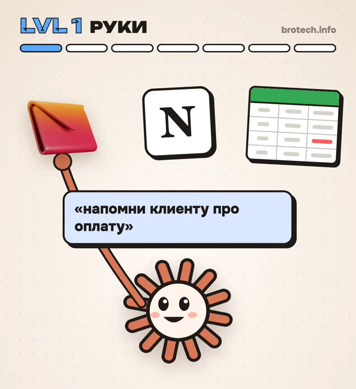

LVL 1 · РУКИ
Claude сам ходит в твои сервисы
Почта, Notion, Google Диск, календарь. Claude не советует, что написать, а открывает сервис и делает.
Пример: «Напомни клиенту про оплату» — и письмо уже ушло.
Как включить
В приложении Claude открой настройки, раздел «Коннекторы» (Connectors), и подключи нужные сервисы. В Claude Code то же самое называется MCP, его можно попросить:
Подключи к себе Notion через MCP и проведи меня по шагам. Потом проверь, что ты видишь мои страницы.